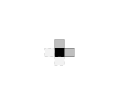

Markov Random Fields are probabilistic models capable of describing sets of random variables with a local dependence property (the Markov property) defined on a neighborhood system. Particularly on the context of image processing, pixels can be seen as vertices of a graph defined on a finite 2-dimensional lattice, and a neighborhood system can be defined based on their relative positions to construct a MRF.

The goal of mrf2d is to provide a framework for the analysis of Markov Random Fields with pairwise interactions on 2-dimensional lattices, including Hidden Markov Random Fields. It introduces the S4 class mrfi to describe interaction structures in a very general way, being able to adapt from very simple cases like the Ising Model to complex anisotropic models with different types of interaction.


A complete paper describing the details of the package and examples can be found at https://arxiv.org/abs/2006.00383.
Installation
You can install the stable version of mrf2d from CRAN with:
install.packages("mrf2d")
The development version is available on the package’s Github page. It can be installed with the devtools package by using
devtools::install_github("Freguglia/mrf2d")
Usage
mrf2d introduces a programming interface for the general Markov Random Field model in Freguglia, Victor, Nancy L. Garcia, and Juliano L. Bicas. “Hidden Markov random field models applied to color homogeneity evaluation in dyed textile images.” Environmetrics (2019): e2613. Using specific interaction structures and parameter restrictions can lead to important models as particular cases, such as the Potts model.
It introduces the S4 class mrfi to represent interaction structures. The mrfi() function can be used to create these objects representing interaction structures with relative positions included based on the norm of the relative position (distance) or explicitly specified
interact <- mrfi(max_norm = 1, positions = list(c(4,2))) interact #> 3 interacting positions. #> rx ry #> 1 0 #> 0 1 #> 4 2 plot(interact)

Potentials (parameters) are represented by three-dimensional arrays, where rows and columns represent pixel label values and slices represent interacting positions.
potentials <- expand_array(c(-0.9, -0.9, 0.2), family = "oneeach", C = 1, mrfi = interact) potentials #> , , (1,0) #> #> 0 1 #> 0 0.0 -0.9 #> 1 -0.9 0.0 #> #> , , (0,1) #> #> 0 1 #> 0 0.0 -0.9 #> 1 -0.9 0.0 #> #> , , (4,2) #> #> 0 1 #> 0 0.0 0.2 #> 1 0.2 0.0
The negative values out of diagonal means different “colors” are less likely in that relative position.
The package has many built-in functions for sampling, potentials estimation and hidden MRF model fitting (used for image segmentation), but it also provides all the basic stack of computations used to implement algorithms for MRF models, making it suitable for development of research in Markov Random Field models.
set.seed(1) img_dim <- c(200,200) Z <- rmrf2d(img_dim, mrfi = interact, theta = potentials, cycles = 60) dplot(Z, legend = TRUE)

Contributing and Bug Reports
If you’re interested in contributing or found a bug or error, please file an issue. Contributions can be done in form of code optimization, new ideas, discussing new structures, etc.